![ACTIVITY -5
1. Draw a circle with centre O and with suitable radius.
2. Make it a semi-circle through folding. Consider point A, B on it.
3. Make a crease along AB in the semi circles and open it.
4. We get one more crease line on the another part of the semicircle, name it as CD (observe AB = CD)
5. Join the radius to get the triangle OAB and triangle OCD.
6. Using trace paper, take the replicas of triangle triangle OAB and triangle OCD.
7. Place these triangles triangle OAB andtriangleOCD one on the other.](images/image203.png)
Inspiration is needed in geometry just as much as in poetry. - Alexander Pushkin
Thales (BC (BCE) 624 – 546)
Thales (Pronounced THAYLEES) was born in the Greek city of Miletus. He was known for theoretical and practical understanding of geometry, especially triangles. He used geometry to solve many problems such as calculating the height of pyramids and the distance of ships from the seashore. He was one of the so-called Seven Sagas or Seven Wise Men of Greece and many regarded him as the first philosopher in the western tradition.
Learning Outcomes
In geometry, we study shapes. But what is there to study in shapes, you may ask. Think first, what are all the things we do with shapes? We draw shapes, we compare shapes, we measure shapes. What do we measure in shapes?
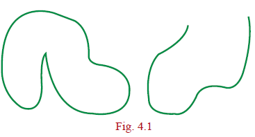
Take some shapes like this:
Fig. 4.1 In both of them, there is a curve forming the shape: one is a closed curve, enclosing a region, and the other is an open curve. We can use a rope (or a thick string) to measure the length of the open curve and the length of the boundary of the region in the case of the closed curve.
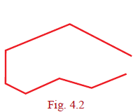
Curves are tricky, aren’t they? It is so much easier to measure length of straight lines using the scale, isn’t it? Consider the two shapes below.
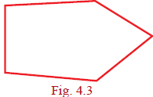
Now we are going to focus our attention only on shapes made up of straight lines and on closed figures. As you will see, there is plenty of interesting things to do. Fig.4.2 shows an open figure.
Figure. 4.3
We not only want to draw such shapes, we want to compare them, measure them and do much more. For doing so, we want to describe them. How would you describe these closed shapes? (See Fig ure4.3) They are all made up of straight lines and are closed.
Plumbers measure the angle between connecting pipes to make a good fitting. Wood workers adjust their saw blades to cut wood at the correct angle. Air Traffic Controllers (ATC) use angles to direct planes. Carom and billiards players must know their angles to plan their
shots. An angle is formed by two rays that share a common end point provided that the two
rays are non-collinear.
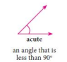
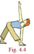
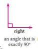
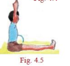
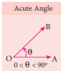
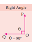
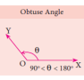
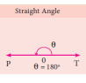
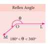
Complementary Angles
Two angles are Complementary if their sum is 90° degree. For example, if ∠ABC=64° degree and ∠DEF=26° degree, then angles ∠ABC and ∠DEF are complementary to each other because angle ∠ABC plus angle ∠DEF =equal 90° degree
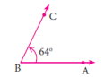
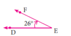
Supplementary Angles
Two angles are Supplementary if their sum is 180°. For example, if ∠ABC=110°degree and ∠XYZ=70°
Here ∠ABC + ∠XYZ = 180°
Angle ABC plus Angle XYZ equal 180 degrees
∴∠ABC and ∠XYZ are supplementary to each other
Angle ABC and Angle XYZ are supplementary to each other
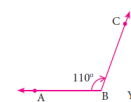
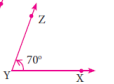
Adjacent Angles
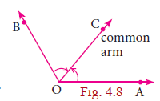
Two angles are called adjacent angles if
1) They have a common vertex.
(ii) They have a common arm.
(iii) The common arm lies between the two non-common arms.
Linear Pair of Angles
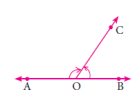
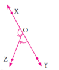
If a ray stands on a straight line then the sum of two adjacent angle is 180°. We then say that the angles so formed is a linear pair.
∠AOC + ∠BOC=180° Angle AOC plus Angle BOC equal 180 degree
∴∠AOC and ∠BOC Angle AOC and Angle BOC
form a linear pair
∠XOZ + ∠YOZ = 180° Angle XOZ plus Angle YOZ equal 180 degree
∠XOZ and ∠YOZ Angle XOZ and Angle YOZ form a linear pair
Vertically Opposite Angles
If two lines intersect each other, then vertically opposite angles are equal.
In this figure ∠POQ = ∠SOR Angle POQ equal Angle SOR
∠POS = ∠QOR Angle POS equal Angle QOR
Angle POS equal Angle QOR
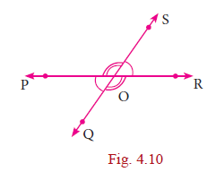
4.point2.point 1 Transversal
A line which intersects two or more lines at distinct points is called a transversal of those lines.
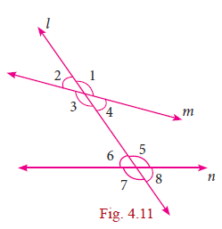
Case (i) When a transversal intersect two lines, we get eight angles.
In the figure the line l is the transversal for the lines m and n
(i) Corresponding Angles: ∠1 and ∠5 comma ∠2 and ∠6 comma ∠3 and ∠7 comma ∠4 and ∠8
(ii) Alternate Interior Angles: ∠4 and ∠6 comma ∠3 and ∠5
(iii) Alternate Exterior Angles: ∠1 and ∠7 comma ∠2 and ∠8
(iv) ∠4 and ∠5,∠3 and ∠6 are interior angles on the same side of the transversal.
(v) ∠1 and ∠8, ∠2 and ∠7 are exterior angles on the same side of the transversal.
Romen letter 1 Corresponding Angles:∠1 angle 1 comma and ∠5 angle 5 comma ∠2 angle 2 comma and ∠6, angle 6 comma ∠3 angle 3 comma and ∠7, angle 7 comma ∠4 angle 4 comma and angle 8 comma ∠8
Romen letter 2 Alternate Interior Angles: ∠4 angle 4 comma and∠6, angle 6 comma ∠3 angle 3 comma and ∠5 angle 5 comma
Romen letter 3 Alternate Exterior Angles:∠1 angle 1 comma and ∠7, angle 7 comma ∠2 angle 2 comma and ∠8 angle 8 comma
Romen letter 4 angle 4 comma ∠4 and ∠5, angle 5 comma ∠3 angle 3 comma and ∠6 angle 6 comma are interior angles on the same side of the transversal.
Romen letter 5 angle 1 comma ∠1 and ∠8, angle 8 comma ∠2 angle 2 comma and ∠7 angle 7 comma are exterior angles on the same side of the transversal
Case (ii) If a transversal intersects two parallel lines. The transversal forms different pairs of angles.
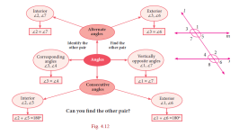
4.point2point.2 Triangles
Activity 1 1. Take three different colour sheets; place one over the other and draw a triangle on the top sheet. Cut the sheets to get triangles of different colour which are identical. Mark the vertices and the angles as shown. Place the interior angles ∠1, ∠2 and ∠3 angle 1 comma ∠2 angle 2 comma and ∠3 angle 3 comma on a straight line, adjacent to each other, without leaving any gap. What can you say about the total measure of the three angles ∠1, ∠2 and ∠3? ∠1, angle 1 comma ∠2 angle 2 comma and ∠3 angle 3 comma
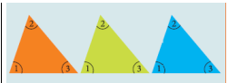
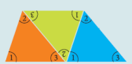
Can you use the same figure to explain the “Exterior angle property” of a triangle?
If a side of a triangle is stretched, the exterior angle so formed is equal to the sum of the two interior opposite angles. That is d=a+b d equal a pius b (see FigURE 4.14)
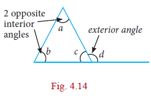
4.point2.point3 Congruent Triangles
Two triangles are congruent if the sides and angles of one triangle are equal to the corresponding sides and angles of another triangle.
Rule |
Diagrams |
Reason |
SSS |
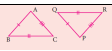 |
AB = PQ AB EQUAL PQ BC = QR BC EQUAL QR AC = PR AC EQUAL PR ΔABC ≅ ΔPQR TRIANGLE ABC EQUAL TRIANGLE PQR |
SAS |
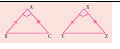 |
AB = XY AB EQUAL XY ∠BAC = ∠YXZ Angle BAC EQUAL YXZ AC = XZ AC EQUAL XZ ΔABC ≅ ΔXYZ TRIANGLE ABC Congruent TRIANGLE XYZ |
ASA |
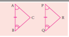 |
∠A = ∠P Angle A equal P AB = PQ AB equal PQ ∠B = ∠Q angle B Equal angle Q ΔABC ≅ ΔPQR TRIANGLE ABC Congruent TRIANGLE PQR |
AAS |
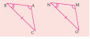 |
∠A = ∠M angle A Equal angle M ∠B = ∠N angle B Equal angle N BC = NO BC Equal NO TRIANGLE ΔABC ≅ Congruent TRIANGLE ΔMNO TRIANGLE ABC Congruent TRIANGLE MNO
|
RHS |
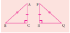 |
∠ACB = ∠PRQ = 90°(R) 90°( H ) angle ACB equal angle PRQ equal 90 degree செ AB = PQ hypotenuse (H) AB equal PQ AC = PR (S) ΔABC ≅ ΔPQR TRIANGLE ABC Congruent TRIANGLE mno |
Exercise 4.1
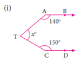
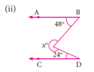
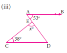
ANSWER 1. (i) 70 degree Congruent TRIANGLE (ii) 288° degree (iii) 89° degree
ANSWER 2. 30° degree, 60° degree, 90° 5. 80° degree, 85 ° degree, 15 ° degree
3. Consider the given pairs of triangles and say whether each pair is that of congruent triangles. If the triangles are congruent, say ‘how’; if they are not congruent say ‘why’ and also say if a small modification would make them congruent:
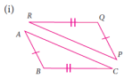
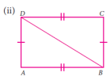
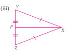
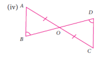
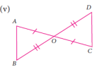
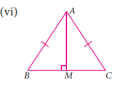
4. ΔABC and ΔDEF are two triangles in which
AB=DF, angle ∠ACB=70°, angle ∠ABC=60°; angle ∠DEF=70° and angle ∠EDF=60°.
Prove that the triangles are congruent.
Triangle ABC and Triangle DEF are two triangles in which AB equal DF and L∠ACB equal70°, angle ABC equal 60°, angle DEF equal 70° and angle EDF = 60° Prove that the triangles are congruent
5. Find all the three angles of the ΔABC
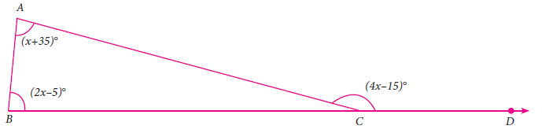
Activity 2
Four Tamil Nadu State Transport buses take the following routes. The first is a one-way journey, and the rest are round trips. Find the places on the map, put points on them and connect them by lines to draw the routes. The places connecting four different routes are given as follows.
1. Nagercoil, Tirunelveli, Virudhunagar, Madurai
(ii) Sivagangai, Puthukottai, Thanjavur, Dindigul, Sivagangai
(iii) Erode, Coimbatore, Dharmapuri, Karur, Erode
(iv) Chennai, Cuddalore, Krishnagiri, Vellore, Chennai
You will get the following shapes.
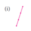
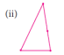
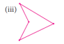
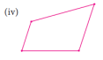
Label the vertices with city names, draw the shapes exactly as they are shown on the map without rotations.
We observe that the first is a single line, the four points are collinear. The other three are closed shapes made of straight lines, of the kind we have seen before. We need names to call such closed shapes, we will call them polygons from now on.
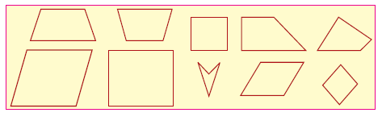
Fig. 4.20
How do polygons look? They have sides, with points at either end. We call these points as vertices of the polygon. The sides are line segments joining the vertices. The word poly stands for many, and a polygon is a many-sided figure.
How many sides can a polygon have? One? But that is just a line segment. Two ? But how can you get a closed shape with two sides? Three? Yes, and this is what we know as a triangle. Four sides?
Note
Concave polygon: Polygon having any one of the interior angle greater than 180o
Convex Polygon: Polygon having each interior angle less than 180 degree
(Diagonals should be inside the polygon)
Squares and rectangles are examples of polygons with 4 sides, but they are not the only ones. Here (Fig. 4.20) are some examples of 4-sided polygons. We call them quadrilaterals.
1. A parallelogram is a quadrilateral in which opposite sides are parallel and equal.
2. A rhombus is a quadrilateral in which opposite sides are parallel and all sides are equal.
3. A trapezium is a quadrilateral in which one pair of opposite sides are parallel.
Draw a few parallelograms, a few rhombuses (correctly called rhombii, like cactus and cacti) and a few trapeziums (correctly written trapezia).
The great advantage of knowing properties of quadrilateral is that we can see the relationships among them immediately.
For “not necessarily the other way” mathematicians usually say, “the converse is not true”. A smart question then is: just when is the other way also true? For instance, when is a parallelogram also a rectangle? Any parallelogram in which all angles are also equal is a rectangle. (Do you see why?) Now we can observe many more interesting properties. For instance
Note
You know bi-cycles and tricycles? When we attach bi or tri to the front of any word, they stand for 2 (bi) or 3 (tri) of them. Similarly, quadri stands for 4 of them. We should really speak of quadri-cycles also, but we don’t. Lateral stands for sideways, thus quadrilateral means a 4-sided figure. You know trilaterals; they are also called triangles !
After 4 ? We have: 5 – penta, 6 – hexa, 7 – hepta, 8 – octa, 9 – nano, 10 – deca. Conventions are made by history. Trigons are called triangles, quadrigons are called quadrilaterals. Continuing in the same way we get pentagons, hexagons, heptagons, octagons, nanogons and decagons. Beyond these, we have 11-gons, 12-gons etc. Perhaps you can draw a 23-gon !
ce, we see that a rhombus is a parallelogram in which all sides are also equal.
When all sides of a quadrilateral are equal, we call it equilateral. When all angles of a quadrilateral are equal, we call it equiangular. In triangles, we talked of equilateral triangles as those with all sides equal. Now we can call them equiangular triangles as well!
We thus have:
A rhombus is an equilateral parallelogram.
A rectangle is an equiangular parallelogram.
A square is an equilateral and equiangular parallelogram.
Here are two more special quadrilaterals, called kite and isosceles trapezium.
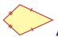
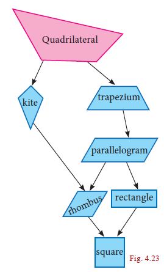
Progress Check
Answer the following question.
Romen letter 1 Are the opposite angles of a rhombus equal?
Romen letter 2 A quadrilateral is a DASH if a pair of opposite sides are equal and parallel.
Romen letter 3 Are the opposite sides of a kite equal?
Romen letter 4 Which is an equiangular but not an equilateral parallelogram?
Romen letter 5 Which is an equilateral but not an equiangular parallelogram?
Romen letter 6 Which is an equilateral and equiangular parallelogram?
Romen letter 7 DASH is a rectangle, a rhombus and a parallelogram.
Activity 3
Step – 1: Cut out four different quadrilaterals from coloured glazed papers.
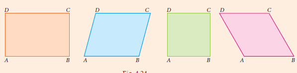
Step – 2: Fold the quadrilaterals along their respective diagonals. Press to make creases. Here, dotted line represent the creases.
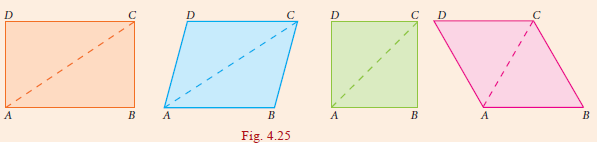
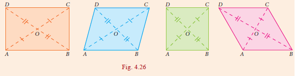
Step – 3: Fold the quadrilaterals along both of their diagonals. Press to make creases.
Fig. 4.26
We observe that two imposed triangles are congruent to each other. Measure the lengths of portions of diagonals and angles between the diagonals.
Also do the same for the quadrilaterals such as Trapezium, Isosceles Trapezium and Kite.
From the above activity, measure the lengths of diagonals and angles between the diagonals and record them in the table below:
S.No |
Name of the quadrilateral |
Length along diagonals |
Measure of angles |
||||||||
AC |
BD |
OA |
OB |
OC |
OD |
ANGLEAOB |
ANGLEBOC |
angleCOD |
∠DOA |
||
1 |
Trapezium |
|
|
|
|
|
|
|
|
|
|
2 |
Isosceles Trapezium |
|
|
|
|
|
|
|
|
|
|
3 |
Parallelogram |
|
|
|
|
|
|
|
|
|
|
4 |
Rectangle |
|
|
|
|
|
|
|
|
|
|
5 |
Rhombus |
|
|
|
|
|
|
|
|
|
|
6 |
Square |
|
|
|
|
|
|
|
|
|
|
7 |
Kite |
|
|
|
|
|
|
|
|
|
|
Activity 4
Angle sum for a polygon
Draw any quadrilateral ABCD.
Mark a point P in its interior.
Join the segments PA, PB, PC and PD.
You have 4 triangles now.
How much is the sum of all the angles of the 4 triangles question mark
How much is the sum of the angles at P question mark
Can you now find the ‘angle sum’ of the quadrilateral ABCD?
Can you extend this idea to any polygon question mark
Thinking Corner
If there is a polygon of n sides (n ≥ 3) comma ,n greater than equal 3 then the sum of all interior angles is (n–2) X 180° n minus 2 multiply 180
Name |
Diagram |
Sides |
Angles |
Diagonals |
Parallelogram |
Opposite sides are parallel and equal |
Opposite angles are equal and sum of any two adjacent angles is 180° |
Diagonals bisect each other. |
|
Rhombus |
|
All sides are equal and opposite sides are parallel |
Opposite angles are equal and sum of any two adjacent angles is 180° degree |
Diagonals bisect each other at right angle. |
Trapezium |
One pair of opposite sides are parallel |
The angles at the ends of each non-parallel sides are supplementary |
Diagonals need not be equal |
|
Isosceles Trapezium |
One pair of opposite sides are parallel and non-parallel sides are equal in length. |
The angles at the ends of each parallel sides are equal. |
Diagonals are of equal length. |
|
Kite |
Two pairs of adjacent sides are equal |
One pair of opposite angles are equal |
1. Diagonals intersect at right angle. 2. Shorter diagonal bisected by longer diagonal 3. Longer diagonal divides the kite into two congruent triangles |
Note
(i) A rectangle is an equiangular parallelogram.
(ii) A rhombus is an equilateral parallelogram.
(iii) A square is an equilateral and equiangular parallelogram.
(iv) A square is a rectangle, a rhombus and a parallelogram.
Progress Check
1. State the reasons for the following.
(i) A square is a special kind of a rectangle.
(ii) A rhombus is a special kind of a parallelogram.
(iii) A rhombus and a kite have one common property.
(iv) A square and a rhombus have one common property.
2.What type of quadrilateral is formed when the following pairs of congruent triangles are joined together?
(i) Equilateral triangle.
(ii) Right angled triangle.
(iii) Isosceles triangle.
3. Identify which ones are parallelograms and which are not.
4.Which ones are not quadrilaterals?
5. Identify which ones are trapeziums and which are not.
We can now embark on an interesting journey. We can tour among lots of quadrilaterals, noting down interesting properties. What properties do we look for, and how do we know they are true?
For instance, opposite sides of a parallelogram are parallel, but are they also equal? We could draw any number of parallelograms and verify whether this is true or not. In fact, we see that opposite sides are equal in all of them. Can we then conclude that opposite sides are equal in all parallelograms? No, because we might later find a parallelogram, one which we had not thought of until then, in which opposite sides are unequal. So, we need an argument, a proof.
Consider the parallelogram ABCD in the given Fig. 4.28. We believe that AB =equal CD and AD =equal BC AB equal CD and AD equal BC, but how can we be sure? We know triangles and their properties. So, we can try and see if we can use that knowledge. But we don’t have any triangles in the parallelogram ABCD.
This is easily taken care of by joining AC. (We could equally well have joined BD, but let it be AC for now.) We now have 2 triangles ADC and ABC with a common side AC. If we could somehow prove that these two triangles are congruent, we would get AB = CD and AD = BC, AB equal CD and AD equal BC which is what we want!
Is there any hope of proving that DADC and DABC are congruent question mark.There are many criteria for congruence, it is not clear which one is relevant here.
So far we have not used the fact that ABCD is a parallelogram at all. So, we need to use the facts that AB plus DC and AD plusBC to show that DADC and DABC are congruent. From sides being parallel we have to get into some angles being equal. Do we know any such properties? we do, and that is all about transversals!
Now we can see it clearly. ADBC and AC is a transversal, hence DAC equal BCA. Similarly, ABDC, AC is a transversal, hence BAC equal DCA. With AC as common side, the ASA criterion tells us that DADC and DABC are congruent, just what we needed. From this we can conclude that AB equal CD and AD equal BC.
Thus, opposite sides are indeed equal in a parallelogram.
The argument we now constructed is written down as a formal proof in the following manner.
Theorem 1
In a parallelogram, opposite sides are equal
Fig. 4.30
Given ABCD is a parallelogram
To Prove AB equal CD and DA equal BC
Construction Join AC
Proof
Since ABCD is a parallelogram
AD<BC and AC is the transversal
∠DAC = ∠BCA →(1) (alternate angles are equal)
angle DAC equal angle BCA
AB<DC and AC is the transversal
∠BAC = ∠DCA →(2) (alternate angles are equal)
angle BAC equal angle DCA
In ΔADC and ΔCBA
∠DAC = ∠BCA from (1)
angle DCA = angle BAC
AC is common
∠DCA = ∠BAC angle DCA = angle BAC from (2)
ΔADC b ΔCBA (By ASA)
Hence AD = CB and DC = BA AD equal CB and DC equal BA (Corresponding sides are equal)
Along the way in the proof above, we have proved another property that is worth recording as a theorem.
Theorem 2
A diagonal of a parallelogram divides it into two congruent triangles.
Notice that the proof above established that ∠DAC = ∠BCA and ∠BAC = ∠DCA. Hence we also have, in the figure above,
∠BCA + ∠BAC = ∠DCA + ∠DAC
angle BCA plus angle BAC eq angle DCA plus angle DAC
But we know that:
∠B + ∠BCA + ∠BAC = 180 angle B plus angle BCA plus angle BAC equal 180°degree
and ∠D + ∠DCA + ∠DAC = 180 angle D plus angle DCA plus angle DAC equal 180°
Therefore, we must have that ∠B = ∠D. angle B equal angle D
With a little bit of work, proceeding similarly, we could have shown that ∠A = ∠C as well. Thus, we have managed to prove the following theorem:
Theorem 3
The opposite angles of a parallelogram are equal.
Now that we see congruence of triangles as a good “strategy”, we can look for more triangles. Consider both diagonals AC and DB. We already know that DADC and DCBA .triangle ADC and triangle CBA are congruent. By a similar argument we can show that DDAB and DBCD are congruent as well. Are there more congruent triangles to be found in this figure?
Yes. The two diagonals intersect at point O. We now see 4 new DAOB, DBOC, DCOD and DDOA. Can you see any congruent pairs among them?
Since AB and CD are parallel and equal, one good guess is that ΔAOB and ΔCOD are congruent. We could again try the ASA criterion; in which case we want angle OAB equal angle OCD and angle ABO equal angle CDO. But the first of these follows from the fact that angle CAB equal angle ACD open which we already established close bracket and observing that angle CAB and angle OAB are the same open and so also angle OCD and angle ACD close bracket. We now use the fact that BD is a transversal to get that angle ABD equal angle CDB, but then angle ABD is the same as angle ABO, angle CDB is the same as angle CDO, and we are done.
Again, we need to write down the formal proof, and we have another theorem.
Theorem 4
The diagonals of a parallelogram bisect each other.
It is time now to reinforce our concepts on parallelograms. Consider each of the given statements, in the adjacent box, one by one. Identify the type of parallelogram which satisfies each of the statements. Support your answer with reason.
Now we begin with lots of interesting properties of parallelograms. Can we try and prove some property relating to two or more parallelograms? A simple case to try is when two parallelograms share the same base, as in Fig.4.33
We see parallelograms ABCD and ABEF are on the common base AB. At once we can see a pair of triangles for being congruent DADF and DBCE. We already have that AD equal BC and AF equal BE. But then since AD less than BC and AF less than BE, the angle formed by AD and AF must be the same
• Each pair of its opposite sides are parallel.
• Each pair of opposite sides is equal.
• All of its angles are right angles.
• Its diagonals bisect each other.
• The diagonals are equal.
• The diagonals are perpendicular and equal.
• The diagonals are perpendicular bisectors of each other.
• Each pair of its consecutive angles is supplementary.
as the angle formed by BC and BE. Therefore, angle DAF equal angle CBE. Thus DADF and DBCE are congruent.
That is an interesting observation; can we infer anything more from this ? Yes, we know that congruent triangles have the same area. Th is makes us think about the areas of the parallelograms ABCD and ABEF.
Area of ABCD equal area of quadrilateral ABED plus area of DBCE
Equal area of quadrilateral ABED plus area of DADF
equal = area of ABEF
Thus, we have proved another interesting theorem:
Theorem 5: Parallelograms on the same base and between the same parallels are equal in area.
In this process, we have also proved other interesting statements. Th ese are called Corollaries, which do not need separate detailed proofs.
Corollary 1: Triangles on the same base and between the same parallels are equal in area.
Corollary 2: A rectangle and a parallelogram on the same base and between the same parallels are equal in area.
These statements that we called Theorems and Corollaries, hold for all parallelograms,
Example4.1
In a Parallelogram ABCD, the bisectors of the consecutive angles ∠A and ∠B intersect a P. Show that angle APB =equal 0° degree angle APB equal 90
Solution
ABCD is a parallelogram AP and BP are bisectors of consecutive angles ∠ A and ∠B.
Since the consecutive angles of a parallelogram are supplementary ∠A + ∠B =180°
1/ 2 ∠A plus 1/2 angle ∠ B = 180 °/ 2
angle ∠ PAB plus angle ∠PBA = 90 degree
In ΔAPB, ∠PAB + ∠ APB + ∠PBA = 180 ° (angle sum property of triangle)
angle ∠ APB = 180 ° minus– [ ∠PAB+ ∠PBA]
= 180 °-minus 90°= 90° Hence Proved
angle A plus angle B equal 180°
1 by 2 angle A plus 1 by 2 angle B equal 180 degree by 2
angle PAB plus angle PBA equal 90
triangle APB comma angle PAB plus angle APB plus angle PBA equal 180 degree(angle sum property of triangle)
angle APB minus 180° minus angle PAB plus angle PBA
equal 180 minus 90° equal 90°
Angle APB equal 90 degree verified
Example 4.2
In the Fig.4.35 ABCD is a parallelogram, P and Q are the mid- points of sides AB and DC respectively. Show that APCQ is a parallelogram.
Solution Since P and Q are the mid points of AB and DC respectively
Therefore AP equal 1/2 AB and QC equa1/2 DC --------(1)
But AB equal DC (Opposite sides of a parallelogram are equal)
1/2 AB equal and QC 1/2 DC
AP equaQC --------(2) AP equal QC --------(2)
Also , AB parallel to DC AB parallel DC
AP || QC (3) [ ABCD is a parallelogram] AP equal QC
Thus, in quadrilateral APCQ we have AP= QC and AP parallel to | QC [from (2) and ( 3)] Hence , quadrilateral APCQ is a parallelogram
Example 4.3
ABCD is a parallelogram Fig.4.36 such that ∠BAD = 120o and AC bisects ∠BAD show that ABCD is a rhombus.
Solution Given angke BAD equal 120° degree]and AC bisects angle BAD
Angle BAC equal 1 by 2 multiply 120° equal 60° degree]
Angle1 equal angke2 = 60° degree]
AD || parallel to BC and AC is the traversal
angke2 equal angle 4 equal 60° degree]
Δ ABC is isosceles triangle [angle1 equal angle ∠4 equal 60 °degree]
AB 2 equal BC Parallelogram ABCD is a rhombus.
Example 4.4 In a parallelogram ABCD, P and Q are the points on line DB such that PD = BQ show that APCQ is a parallelogram
Solution
ABCD is a parallelogram.
OA equal OC and
OB equal OD (Diagonals bisect each other)
now OB plus BQ equal OD plus DP
OQ equal OP and OA equal OC
APCQ is a parallelogram.
Exercise 4.2
1. Th e angles of a quadrilateral are in the ratio 2 : 4 : 5 : 7. Find all the angles.
2. In a quadrilateral ABCD, angle ∠A = 72° and ∠C is the supplementary of ∠A. Th e other two angles are 2x–minus10 and x + 4. Find the value of x and the measure of all the angles.
3. ABCD is a rectangle whose diagonals AC and BD intersect at O. If angle ∠OAB =46°, find angle ∠OBC
4. Th e lengths of the diagonals of a Rhombus are 12 cm and 16 cm. Find the side of the rhombus.
5. Show that the bisectors of angles of a parallelogram form a rectangle.
6. If a triangle and a parallelogram lie on the same base and between the same parallels, then prove that the area of the triangle is equal to half of the area of parallelogram.
7. Iron rods a, b, c, d, e, and f are making a design in a bridge as shown in the figure. If a || b , c || d , e || f , find the marked angles between (i) b and c (ii) d and e (iii d and f (iv) c and f
8. In the given Fig. 4.39, ∠A = 64 degree,° , ∠ABC = 58° degree,. If BO and CO are the bisectors of ∠ABC and ∠ACB respectively of triangle ΔABC, find x° double dash and y°double dash
9. In the given Figure. 4.40, if AB = 2, BC = 6, AE = 6, BF = 8, CE = 7, and CF = 7, compute the ratio of the area of quadrilateral ABDE to the area of ΔCDF. (Use congruent property of triangles).
10. In the Figurr. 4.41 , ABCD is a rectangle and EFGH is a parallelogram. Using the measurements given in the figure, what is the length d of the segment that is perpendicular to HE and FG ?
11. In parallelogram ABCD of the accompanying diagram, line DP is drawn bisecting BC at N and meeting AB (extended) at P. From vertex C, line CQ is drawn bisecting side AD at M and meeting AB (extended) at Q. Lines DP and CQ meet at O. Show that the area of triangle QPO is 89 of the area of the parallelogram ABCD.
Exercise 4.2 solution
1. (i) 40°degree, 80 degree,°, 100° degree,, 140° degree, 2. 62° degree,, 114° degree,, 66° degree,3. 44° degree, 4. 10cm
7. (i) 30° degree, (ii) 105 degree,° (iii) 75° degree, (iv) 105° degree, 8. 122° degree,,
9. Ratios are equal 10. d = 7.6
Circles are geometric shapes you can see all around you. The significance of the concept of a circle can be well understood from the fact that the wheel is one of the ground-breaking inventions in the history of mankind.
A circle, you can describe, is the set of all points in a plane at a constant distance from a fixed point. The fixed point is the centre of the circle; the constant distance corresponds to a radius of the circle.
A line that cuts the circle in two points is called a secant of the circle.
A line segment whose end points lie on the circle is called a chord of the circle.
A chord of a circle that has the centre is called a diameter of the circle. The circumference of a circle is its boundary. (We use the term perimeter in the case of polygons).
In Fig.4.44, we see that all the line segments meet at two points on the circle. These line segments are called the chords of the circle. So, a line segment joining any two points on the circle is called a chord of the circle. In this figure AB, PQ and RS are the chords of the circle. Now place four points P, R, Q and S on the same circle (Fig.4.45), then ◠ PRQ and ◠QSP are the continuous parts (sections) of the circle. These parts (sections) are to be denoted by ◠QP and PQ or simply by and. This continuous part of a circle is called an arc of the circle. Usually, the arcs are denoted in anti-clockwise direction.
Note
Now consider the points P and Q in the circle (Fig.4.45). It divides the whole circle into two parts. One is longer and another is shorter. The longer one is called major arc ◠QP and shorter one is called minor arc ◠ arc PQ.
Now in (Fig.4.46), consider the region which is surrounded by the chord PQ and major arc ◠QP. This is called the major segment of the circle. In the same way, the segment containing the minor arc and the same chord is called the minor segment.
In (Fig.4.47), if two arcs ◠AB and ◠CD of a circle subtend the same angle at the centre, they are said to be congruent arcs and we write,
◠ arc AB◠arc CD implies m◠ arc AB =m◠arc CD
implies angle AOB≡ angleCOD
Now, let us observe (Fig.4.48). Is there any special name for the region surrounded by two radii and arc? Yes, its name is sector. Like segment, we find that the minor arc corresponds to the minor sector and the major arc corresponds to the major sector.
Concentric Circles
Circles with the same centre but different radii are said to be concentric.
Here are some real-life examples:
Congruent Circles
Two circles are congruent if they are copies of one another or identical. That is, they have the same size. Here are some real-life examples:
Position of a Point with respect to a Circle Consider a circle in a plane (Fig.4.51). Consider any point P on the circle. If the distance from the centre O to the point P is OP, then
Progress Check
Say True or False 1
. Every chord of a circle contains exactly two points of the circle.
2. All radii of a circle are of same length.
3. Every radius of a circle is a chord.
4. Every chord of a circle is a diameter.
5. Every diameter of a circle is a chord.
6. Th ere can be any number of diameters for a circle.
7. Two diameters cannot have the same endpoint.
8. A circle divides the plane into three disjoint parts.
9. A circle can be partitioned into a major arc and a minor arc.
10. Th e distance from the centre of a circle to the circumference is that of a diameter
Thinking Corner
1. How many sides does a circle have ? 2. Is circle, a polygon?
We have already learnt that there is one and only one line passing through two points. In the same way, we are going to see how many circles can be drawn through a given point, and through two given points. We see that in both cases there can be infinite number of circles passing through a given point P (Fig.4.52) , and through two given points A and B (Fig.4.53).
Now consider three collinear points A, B and C (Fig.4.14). Can we draw a circle passing through these three points? Think over it. If the points are collinear, we can’t?
If the three points are non collinear, they form a triangle (Fig.4.55). Recall the construction of the circumcentre. The intersecting point of the perpendicular bisector of the sides is the circumcentre and the circle is circumcircle.
Therefore, from this we know that there is a unique circle which passes through A, B and C. Now, the above statement leads to a result as follows.
Theorem 6 There is one and only one circle passing through three non-collinear points.
In this chapter, already we come across lines, angles, triangles and quadrilaterals. Recently we have seen a new member circle. Using all the properties of these, we get some standard results one by one. Now, we are going to discuss some properties based on chords of the circle.
Considering a chord and a perpendicular line from the centre to a chord, we are going to see an interesting property.
Consider a chord AB of the circle with centre O. Draw OC ⏊AB and join the points OA,OB ,. Here, easily we get two triangles ∆AOC and ∆BOC (Fig.4.56).
Can we prove these triangles are congruent? Now we try to prove this using the congruence of triangle rule which we have already learnt. Angle ∠OCA= Angle ∠ OCB =90° (OC ⏊AB) and OA= OB is the radius of the circle. The side OC is common. RHS criterion tells us that ∆AOC and ∆BOC are congruent. From this we can conclude that AC = equalBC. Th is argument leads to the result as follows.
Theorem 7 Th e perpendicular from the centre of a circle to a chord bisects the chord.
Converse of Theorem 7 Th e line joining the centre of the circle and the midpoint of a chord is perpendicular to the chord.
Example 4.5 Find the length of a chord which is at a distance of 2 √11 cm from the centre of a circle of radius 12cm.
Solution
Let AB be the chord and C be the midpoint of AB
Therefore, OC perpendicular to AB Join OA and OC.
OA is the radius Given OC equal 2 root11cm and OA equal 12cm
In a right ∆OAC , using Pythagoras Theorem, we get,
AC2equal OA2 equal - OC2= 122-( 2 √11)2= 144- 44 equal 100cm
AC 2 equal 100cm
AC equal 10cm
Therefore, length of the chord AB equal 2AC equal 2 × 10cm equal 20cm
Note
Pythagoras theorem
One of the most important and well-known results in geometry is Pythagoras Theorem. “In a right-angled triangle, the square of the hypotenuse is equal to the sum of the squares of the other two sides”. In triangle ∆ABC,BC2=AB2 +plusAC2. Application of this theorem is most useful in this unit.
Example 4.6
In the concentric circles, chord AB of the outer circle cuts the inner circle at C and D as shown in the diagram. Prove that AB- CD = 2AC
Solution
Given : Chord AB of the outer circle cuts the inner circle at C and D.
To prove : AB -minusCD equal 2AC
Construction : Draw OM perpendicular to AB
Proof : Since, OM ⏊perpendiclar to AB (By construction)
Also, OM⏊perpendiclar to CD
Therefore, AM =equal MB ... (1) (Perpendicular drawn from centre to chord bisect it)
CM =equal MD ... (2)
Now, AB – minus CD = 2AM–2minusCM
= 2(AM–CM) from (1) and (2)
AB minus CD equal 2AC
Progress Check
1. Th e radius of the circle is 25 cm and the length of one of its chord is 40cm. Find the distance of the chord from the centre.
2. Draw three circles passing through the points P and Q, where PQ = 4cm.
Instead of a single chord we consider two equal chords. Now we are going to discuss another property.
Let us consider two equal chords in the circle with centre O. Join the end points of the chords with the centre to get the triangles ∆AOB and ≡ triangle ∆OCD , chord AB = chord CD (because the given chords are equal). Th e other sides are radii, therefore OA=OC and OB=OD. By SSS rule, the triangles are congruent, that is ∆OAB≡∆ OCD. Th is gives m angle AOB=_m angle COD. Now this leads to the following result.
Activity – 5
Procedure
1. Draw a circle with centre O and with suitable radius. ∆
2. Make it a semi-circle through folding. Consider the point A, B on it.
3. Make crease along AB in the semi circles and open it.
4. We get one more crease line on another part of semisemi-circle, name it as
CD (observe AB = equalCD)
5. Join the radius to get the ∆≡ triangle OAB and ≡ triangle ∆OCD.
6. Using trace paper, take the replicas of triangle ∆≡ triangle OAB and ∆≡ triangle OCD.
7. Place these triangles ∆≡ triangle OAB and ∆≡ triangle OCD one on the other.
Observation
1. What do you observe? Is triangle ∆OAB≡ triangle∆ OCD ?
2. Construct perpendicular line to the chords AB and CD passing through the centre O. Measure the distance from O to the chords.
Theorem 8 Equal chords of a circle subtend equal angles at the centre.
Now we are going to find out the length of the chords AB and CD, given the angles subtended by two chords at the centre of the circle are equal. That is, angle∠AOB=angle∠ COD and the two sides which include these angles of the ∆AOB≡∆ COD and are radii and are equal.
By SAS rule, triangle ∆AOB≡∆COD. This gives chord AB =equal chord CD. Now let us write the converse result as follows:
Converse of theorem 8
If the angles subtended by two chords at the centre of a circle are equal, then the chords are equal.
In the same way we are going to discuss about the distance from the centre, when the equal chords are given. Draw the perpendicular OL perpendicular to AB and OM perpendicular to CD. From theorem 7, these perpendicular divides the chords equally. So, ALequal CM. By comparing the triangle OAL and ∆triangle OCM , the angles triangle OLAngle ∠ OMC 90°and OA equal OC are radii. By RHS rule, the ∆OAL≡∆OCM. It gives the distance from the centre OL equal OM and write the conclusion as follows.
Theorem 9 Equal chords of a circle are equidistant from the centre.
Let us know the converse of theorem 9, which is very useful in solving problems.
Converse of theorem 9
The chords of a circle which are equidistant from the centre are equal.
Now we are going to verify the relationship between the angle subtended by an arc at the centre and the angle subtended on the circumference.
Procedure
1. Draw three circles of any radius with centre O on a chart paper
2. From these circles ,cut a semi-circle ,a minor segment and a major segment
3. Consider three points on these segment and name them as A, B and C.
4. Cut the triangles and paste it on the graph sheet so that the point A Coincides with the origin as shown in the figure
Observation:
1)Angle in a Semi Circle is DASH angle
2) Angle in a major segment is DASH angle.
3) Angle in a minor segment is DASH angle.
Let us consider any circle with centre O. Now place the points A, B and C on the circumference.
Here AB ◠ arc is a minor arc in Figure.4point.65, a semi-circle in Fig.4.point66 and a major arc in Figure.4.67. Th e point C makes different types of angles in different positions (Figure. 4.point 65 to 4.point 67). In all these circles, ◠arcAXB subtends angle ∠AOB at the centre and angle ACB at a point on the circumference of the circle.
We want to prove angle AOB=equal 2angle ACB. For this purpose, extend CO to D and join CD. Angle OCA equal angle OAC since OA equal OC (radii)
Exterior angle = sum of two interior opposite angles.
Angle AOD equal angle OAC+ plus angle OCA
equal 2angle OCA-------(1) 1
Similarly, equal BOD=equal angle OBC plus angle OCB
equal 2 angle OCB ---------(2 )
From (1) and (2), angle AOD +plus angle BOD equal 2(angle OCA+ angle OCB)
Finally, we reach our result angle AOB= equal2 angle ACB.
From this we get the result as follows :
Progress Check
Draw the outline of different size of bangles and try to find out the centre of each using set square. ii. Trace the given crescent and complete as full moon using ruler and compass.
Fig. 4.68
Theorem 10
The angle subtended by an arc of the circle at the centre is double the angle subtended by it at any point on the remaining part of the circle.
Note
Angle inscribed in a semicircle is a right angle.
Equal arcs of a circle subtend equal angles at the centre.
Example 4.7 Find the value of x° x power degree in the following figures:
Solution Using the theorem the angle subtended by an arc of a circle at the centre is double the angle subtended by it at any point on the remaining part of a circle.
(i)∠ POR=2∠ PQR 2 angle POR equal 2 angle PQR 2
× ° degree = 2 X 50° degree x power degree equal 2 multiply 50 power degree
× ° =equal100°
X degree equal 100 degree
(ii) angle∠MNL= 1/2 Reflex angle∠MOL
=minus1/2 multiply 260° degree
x° degree = 130 degree
(iii)XY is the diameter of the circle.
Therefore∠ XZY= 90° (Angle on a semi – circle)
In triangle XYZ
x° degree + 63° degree + 90° degree =equal 180 degree
x° degree =27° degree
x degree is equal to 27 degree
In triangle OAC,
angle OAC equal angle OCA equal angle OBC equal 20 degree
In triangle OBC,
Angle ∠OCB=∠OCB= 35° degree (angles opposite to equal sides are equal
Angle ∠ ACB= angle∠ OCA+ Angle ∠ OCB
x° degree = equal20° degree +plus 35° degree
x° degree =55° degree
x degree equal 55 degree
Example 4.8 If O is the centre of the circle and angle ∠ABC= 30° then find angle ∠AOC. (see Figure. 4.73)
Solution
Given angle ∠ABC= 30° degree
angle ∠AOC= 2 angle ∠ABC (Th e angle subtended by an arc at the centre is double the angle at any point on the circle)
equal=2X30° degree
equal= 60° degree
Now we shall see, another interesting theorem. We have learnt that minor arc subtends obtuse angle, major arc subtends acute angle and semi-circle subtends right angle on the circumference. If a chord AB is given and C and D are two different points on the circumference of the circle, then find angle ∠ACB and angle ∠ADB. Is there any difference in these angles?
4.5.5 Angles in the same segment of a circle
Consider the circle with centre O and chord AB. C and D are the points on the circumference of the circle in the same segment. Join the radius OA and OB.
1 by 2 angle ∠AOB= angle ∠ ACB 1 by 2 angle AOB equal Angle ACB (by theorem 10) and
1/ by 2 angle ∠AOB= angle ∠ ADB 1by2 Angle A0B equal Angle ADB (by theorem 10)
angleACB= angle ADB
Angle ACB Angle ADB
This conclusion leads to the new result.
Theorem 11 Angles in the same segment of a circle are equal.
Example 4.9 In the given figure, O is the centre of the circle. If the measure of angle ∠OQR=48°, what is the measure of angle∠P ?
Solution Given ∠OQR=48° angle 0QR equal 48 degree
Therefore, ∠ORQ also is 48°. (Why? DASH )
∠QOR =180°-(2X48°)= 84°.
angle QOR equal 180 degree minus 2 multiply 48 degree equal 84 degree.
The central angle made by chord QR is twice the inscribed angle at P.
Thus, measure of ∠QPR = 1/ 2 84°=42°. angle QPR equal 1 by 2 multiply 84 degree equal 42 degree
Exercise 4.3
1. The diameter of the circle is 52cm and the length of one of its chord is 20cm. Find the distance of the chord from the centre.
2. The chord of length 30 cm is drawn at the distance of 8cm from the centre of the circle. Find the radius of the circle
3. Find the length of the chord AC where AB and CD are the two diameters perpendicular to each other of a circle with radius 4 √2cm 4 root 2 cm and find angle OAC and angle OCA.
4. A chord is 12cm away from the centre of the circle of radius 15cm. Find the length of the chord.
5.In a circle, AB and CD are two parallel chords with centre O and radius 10 cm such that AB = 16 cm and CD equal 12 cm determine the distance between the two chords?
6.Two circles of radii 5 cm and 3 cm intersect at two points and the distance between their centres is 4 cm. Find the length of the common chord.
7.Find the value of x° degree in the following figures:
8.In the given figure,angle ∠CAB= 25°, find ÐBDC , triangle e∆DBA and triangle ∆COB
Now, let us see a special quadrilateral with its properties called “Cyclic Quadrilateral”. A quadrilateral is called cyclic quadrilateral if all its four vertices lie on the circumference of the circle. Now we are going to learn the special property of cyclic quadrilateral.
Consider the quadrilateral ABCD whose vertices lie on a circle. We want to show that its opposite angles are supplementary. Connect the centre O of the circle with each vertex. You now see four radii OA, OB, OC and OD giving rise to four isosceles triangles OAB, OBC, OCD and ODA. The sum of the angles around the centre of the circle is 360°. The angle sum of each isosceles triangle is 180°
Thus, we get from the figure,
2×(∠ 1+∠ 2+∠ 3+∠ 4) + 2x in bracket angle1 plus angle 2 plus angle 3 plus angle 4 plus Angle at centre O equal 4 multiply 180 degree
2×(∠ 1+∠ 2+∠ 3+∠ 4) + 360° = 720°
Simplifying this, (∠ 1+∠ 2+∠ 3+∠ 4) = 180°.
2x in bracket angle1 plus angle 2 plus angle 3 plus angle 4 plus 360 degree equal 720 degree
Simplifying this angle1 plus angle 2 plus angle 3 plus angle 4 equal 180°.
You now interpret this as
Theorem 12 Opposite angles of a cyclic quadrilateral are supplementary. Let us see the converse of theorem 12, which is very useful in solving problems
Converse of Theorem 12 If a pair of opposite angles of a quadrilateral is supplementary, then the quadrilateral is cyclic.
Activity – 7
Procedure
1. Draw a circle of any radius with centre O.
2. Mark any four points A, B, C and D on the boundary. Make a cyclic quadrilateral ABCD and name the angles as in Figure. 4.78
3. Make a replica of the cyclic quadrilateral ABCD with the help of tracing paper.
4. Make the cut-out of the angles A, B, C and D as in Figure. 4.79
4.Paste the angle cut out angle 1 comma angle 2 comma angle 3 and angle 4 adjacent to the angles opposite to A, B, C and
D as in Figure. 4.80
6. Measure the angles angle1 plus angle 3 comma and angle 2 plus angle 4.
Observe and complete the following:
1. (i) angle ∠A+plus∠C= DASH (ii) angle∠B+ plus ∠D= DASH (iii) angle ∠C + plus ∠A = C A DASH (iv) angle ∠D + plus angle ∠B = DASH
2. Sum of opposite angles of a cyclic quadrilateral is DASH.
3. Th e opposite angles of a cyclic quadrilateral is DASH.
romen letter 1 angle A plus angle C equal dash
.romen letter 2 angle B plus angle D equal dash
.romen letter 3 angle C plus angle A equal C A dash
.romen letter 4 angle D plus angle B equal dash
Example 4.10 If PQRS is a cyclic quadrilateral in which angle∠PSR= 70° degree and ∠QPR= 40° degree, then findangle ∠PRQ (see Fig. 4.81).
Solution PQRS is a cyclic quadrilateral Given angle ∠PSR =equal70°
Angle ∠PSR+plus angle ∠ PQR =equal 180° (state reason DASH )
70° degree + plus angle ∠PQR =equal 180° degree
angle∠PQR = 180°-70° degree
angle ∠PQR = 110° degree
In DPQR we have,
Angle PQR plus angle PRQ plus angle QPR equal 180 degree state reason DASH
110° degree plus angle∠PRQ+ 40 degree=equal 180° degree
angle∠PRQ = 180° degree -150° degree
angle ∠PRQ = ° 30 degree
cyclic quadrilateral PQRS angle PSR equal 70 degree and angle QPR equal 40 degree எனில் comma Find angle PRQ Graph point.81 .
solution cyclic quadrilateral PQRS angle PSR equal 70 degree given
Angle PSR+ Angle PQR equal 180° state reason DASH
70° degree + Angle PQR equal 180°
Angle PQR equal 180 degree minus 70 degree
Angle PQR equal 110 degree
Triangle PQR we get
Angle PQR + Angle PRQ+ Angle QPR equal 180° degree state reason DASH
110 degree angle PRQ plus 40 equal 180 degree
Angle PRQ equal 180° minus 150° degree
Angle PRQ equal 30° degree
Exterior Angle of a Cyclic Quadrilateral
An exterior angle of a quadrilateral is an angle in its exterior formed by one of its sides and the extension of an adjacent side.
Let the side AB of the cyclic quadrilateral ABCD be extended to E. Here angle ABC and angle CBE are linear pair, their sum is 180 degree and the angles angle ABC and angle ADC are the opposite angles of a cyclic quadrilateral, and their sum is also 180 degree comma From this comma angle ABC plus angle CBE equal angle ABC angle ADC and finally we get angle CBE equal angle ADC. Similarly, it can be proved for other angles.
Theorem 13 If one side of a cyclic quadrilateral is produced then the exterior angle is equal to the interior opposite angle.
Progress Check
1. If a pair of opposite angles of a quadrilateral is supplementary, then the quadrilateral is DASH.
2. As the length of the chord decreases, the distance from the centre DASH.
3. If one side of a cyclic quadrilateral is produced then the exterior angle is DASH to the interior opposite angle.
4. Opposite angles of a cyclic quadrilateral are DASH.
Example 4.11 In the figure given, find the value of x power degree and y power degree comma
Solution By the exterior angle property of a cyclic quadrilateral,
we get, y power degree equal 100 degree and x power degree plus 30 degrees equal 60 and so x degree equal 30 degree
Exercise 4.4
2.In the given figure, AC is the diameter of the circle with centre O. If ∠ADE =30°;
If angle DAC= equal35 degree And angle ∠CAB =40° degree.Find (i) angle ∠ACD B (ii) angle∠ACB (iii) angle∠DAE
Angle ADE equal 30 degree, comma ;angle DAC equal 35 degree and angle CAB equal 40 degree
3.Find all the angles of the given cyclic quadrilateral ABCD in the figure.
4.In the given figure, ABCD is a cyclic quadrilateral where diagonals intersect at P such that ∠DBC= 40 degree and angle BAC equal 60 degree
find angle CAD angle BCD
5.In the given figure, AB and CD are the parallel chords of a circle with centre O. Such that AB equal 8cm and CD equal6cm. If OM parallel to AB and O parallel to CD distance between LM is 7cm. Find the radius of the circle question mark
6.The arch of a bridge has dimensions as shown, where the arch measure 2m at its highest point and its width is 6m. What is the radius of the circle that contains the arch question mark
7.In figure comma angle ABC equal 120-degree comma angle ABC Equal 120 degree where A comma B and C are points on the circle with centre O. Find angle OAC question mark a angle OAC Question mark angle OAC Question mark
8.A school wants to conduct tree plantation programme. For this a teacher allotted a circle of radius 6m ground to nineth standard students for planting saplings. Four students plant trees at the points A comma B comma C and D as shown in figure. Here AB equal 8m camma CD equal 10m and AB parallel to CD. If another student places a flowerpot at the point P, the intersection of AB and CD, then find the distance from the centre to P.
9. In the given figure camma angle POQ equal 100° and angle PQR equal30°.then find angleRPO.
Angle POQ equal 100degree and angle PQR equal to 30 degree. Then find angle RPO.
ANSWER Exercise 4.4
1. 30° degree 2. (i) angle ∠ACD equal =55° degree (ii) angle ∠ACB = equal 50° degree (iii) angle ∠DAE = equal 25°
3. angle ∠A = 64° degree; angle ∠B = 80 degree °; ∠C = equal 116° degree; angle ∠D = equal 100° degree
4.(i) angle ∠CAD = 40° degree (ii) angle ∠BCD = equal 80° degree 5. Radius= equal 5cm 6. 3.25m
7. angle ∠0AC = equal 30° degree 8. 5 point 6m 9. angle ∠RPO =equal 60° degree
Practical geometry is the method of applying the rules of geometry dealt with the properties of points, lines and other figures to construct geometrical figures. “Construction” in Geometry means to draw shapes, angles or lines accurately. The geometric constructions have been discussed in detail in Euclid’s book ‘Elements’. Hence these constructions are also known as Euclidean constructions. These constructions use only compass and straightedge (i.e., ruler). The compass establishes equidistance, and the straightedge establishes collinearity. All geometric constructions are based on those two concepts.
It is possible to construct rational and irrational numbers using straightedge and a compass as seen in chapter II. In 1913 the Indian mathematical Genius, Ramanujam gave a geometrical construction for 355 by113 equal pi. Today with all our accumulated skill in exact measurements. it is a noteworthy feature that lines driven through a mountain meet and make a tunnel. In the earlier classes, we have learnt the construction of angles and triangles with the given measurements.
In this chapter we are going to learn to construct Centroid, Orthocentre, Circumcentre and Incentre of a triangle by using concurrent lines.
Centroid
The point of concurrency of the medians of a triangle is called the centroid of the triangle and is usually denoted by G.
Activity 8
Objective To find the mid-point of a line segment using paper folding
Procedure Make a line segment on a paper by folding it and name it PQ. Fold the line segment PQ in such a way that P falls on Q and mark the point of intersection of the line segment and the crease formed by folding the paper as M. M is the midpoint of PQ.
Example 4.12 Construct the centroid of triangle PQR whose sides are PQ equal 8cm; QR equal 6cm; RP equal 7cm.
Solution
QR equal 6cm and RP equal 7cm and construct the perpendicular bisector of any two sides bracket open PQ and QR close bracket to find the mid-points M and N of PQ and QR respectively
Step 2 : Draw the medians PN and RM and let them meet at G. Th e point G is the centroid of the given triangle ∆PQR.
Note
• Three medians can be drawn in a triangle
• The centroid divides each median in the ratio 2:1 from the vertex.
• The centroid of any triangle always lie inside the triangle.
• Centroid is often described as the triangle’s centre of gravity (where the triangle balances evenly) and as the barycentre.
The orthocentre is the point of concurrency of the altitudes of a triangle. Usually, it is denoted by H.
Activity 9
Objective To construct a perpendicular to a line segment from an external point using paper folding. Procedure Draw a line segment AB and mark an external point P. Move B along BA till the fold passes through P and crease it along that line. Th e crease thus formed is the perpendicular to AB through the external point P.
Activity 10
Objective To locate the Orthocentre of a triangle using paper folding.
Procedure Using the above Activity with any two vertices of the triangle as external points, construct the perpendiculars to opposite sides. Th e point of intersection of the perpendiculars is the Orthocentre of the given triangle.
and locate its Orthocentre.
Solution
Step 1 Draw the triangle ΔPQR with the given measurements.
Step 2: Construct altitudes from any two vertices (say) R and P to their opposite sides PQ and QR respectively.
The point of intersection of the altitude H is the Orthocentre of the giventriangle ΔPQR.
Note
Where do the Orthocentre lie in the given triangles? |
||||||
|
Acute Triangle |
Obtuse Triangle |
Right Triangle |
|||
Orthocentre |
Inside of Triangle
|
Outside of Triangle |
Vertex at Right Angle |
|||
Exercise 4.5
.
Circumcentre
The Circumcentre is the point of concurrency of the Perpendicular bisectors of the sides of a triangle.
It is usually denoted by S.
Circumcircle
The circle passing through all the three vertices of the triangle with circumcentre (S) as centre is called circumcircle.
Circumradius The line segment from any vertex of a triangle to the Circumcentre of a given triangle is called circumradius of the circumcircle.
Activity 11
Objective To construct a perpendicular bisector of a line segment using paper folding.
Procedure Make a line segment on a paper by folding it and name it as PQ. Fold PQ in such a way that P falls on Q and thereby creating a crease RS. Th is line RS is the perpendicular bisector of PQ.
Activity 12
Objective To locate the circumcentre of a triangle using paper folding.
Procedure Using Activity 12, find the perpendicular bisectors for any two sides of the given triangle. Th e meeting point of these is the circumcentre of the given triangle.
Example 4.14
Construct the circumcentre of the triangle ΔABC with AB =equal 5 cm, angle∠A = equal 60 degree and angle ∠B = equal 80 degree AB equal 5 cm A equal 60 and angle ∠B equal 80 degree. Also draw the circumcircle and find the circumradius of the ΔABC.
Solution
Step 1 Draw the ΔABC with the given measurements
Step 2 Construct the perpendicular bisector of any two sides (AC and BC) and let them meet at S which is the circumcentre.
Step 3 S as centre and SA = SB = SC SA equal SB equal SC as radius, draw the Circumcircle to passes through A,B and C. Circumradius = 3.9 cm.
Note
Where do the Circumcentre lie in the given triangles? |
|||
|
Acute Triangle |
Obtuse Triangle |
Right Triangle |
Circumcentre |
Inside of Triangle |
Outside of Triangle |
Midpoint of Hypotenuse s |
The incentre is (one of the triangle’s points of concurrency formed by) the intersection of the triangle’s three angle bisectors.
The incentre is the centre of the incircle; It is usually denoted by I; it is the one point in the triangle whose distances to the sides are equal.
Example 4.15 Construct the incentre of triangle ABC with AB equal 6 cm, B equal 65 degree and AC equal 7 cm Also draw the incircle and measure its radius.
Solution
Step 1: Draw the triangle ABC with AB equal 6cm comma B equal 65 degree and AC equal 7cm triangle ABC.
Step 2 : Construct the angle bisectors of any two angles (A and B) and let them meet at I. Then I is the incentre of Draw perpendicular from I to any one of the side (AB) to meet AB at D.
Step 3: With I as centre and ID as radius draw the circle. This circle touches all the sides of the triangle internally.
Step 4: Measure inradius In radius = 1.9 cm.
Exercise 4.6
1 Draw a triangle ABC, where AB =equal 8 cm, BC = 6 cm and B = 70 degree AB equal 8 cm, BC equal 6 cm and angle B equal 70 degree and locate its circumcentre and draw the circumcircle.
2 Construct the right triangle PQR whose perpendicular sides are 4.5 cm and 6 cm. Also locate its circumcentre and draw the circumcircle.
3. Construct ΔABC with AB =equal 5 cm B =equal 100° degree and BC =equal 6 cm. Also locate its circumcentre draw circumcircle.
4. Construct an isosceles triangle PQR where PQ= PR and Q = 50°, QR = 7cm. Also draw its circumcircle.
5.Draw an equilateral triangle of side 6.point5 cm and locate its incentre. Also draw the incircle.
6. Draw a right triangle whose hypotenuse is 10 cm and one of the legs is 8 cm. Locate its incentre and draw the incircle.
7. Draw triangle ΔABC given AB = 9 cm, angle ∠CAB 115° degree and angle ∠ ABC= 40°. degree AB equal 9 cm angle CAB equal 115 and triangle ABC equal 40 degree Locate its in centre and draw the incircle. (Note: You can check from the above examples that the incentre of any triangle is always in its interior).
8. Construct Δ triangle ABC in which AB =equal BC = equal 6cm and angle ∠B= equal 80 degree..AB equal BC equal 6 cm and angle B equal 80 degree Locate its incentre and draw the incircle.
Exercise 4.7
Multiple Choice Questions
1. The exterior angle of a triangle is equal to the sum of two
(1) Exterior angles
(2) Interior opposite angles
(3) Alternate angles
(4) Interior angles
2. In the quadrilateral ABCD, AB =equal BC and AD = equalDC Measure of angle ∠BCD is
(1) 150 degree
(2) 30° degree
(3) 105° degree
(4) 72° degree
3. ABCD is a square, diagonals AC and BD meet at O. Th e number of pairs of congruent triangles with vertex O are
(1) 6
(2) 8
(3) 4
(4) 12
4. In the given figure CE || DB then the value of x° is
(1) 45° degree
(2) 30° degree
(3) 75° degree
(4) 85° degree
5. The correct statement out of the following is
(1) triangle ΔABC ,comma triangle ΔDEF
(2) triangle ΔABC , triangle ΔDEF
(3) triangle ΔABC , triangle ΔFDE
(4) triangle ΔABC , triangle ΔFED
6. If the diagonal of a rhombus are equal, then the rhombus is a
(1) Parallelogram but not a rectangle
(2) Rectangle but not a square
(3) Square
(4) Parallelogram but not a square
7. If bisectors of ∠A and ∠B of a quadrilateral ABCD meet at O, then ∠AOB is
(1) angle ∠C + angle ∠D
(2) 1/2 angle (∠C + angle ∠D)
(3) 1/2 angle ∠C +1/3 angle ∠D
(4) ½ angle ∠C + ½ angle ∠D)
8. The interior angle made by the side in a parallelogram is 90° then the parallelogram is a
(1) rhombus
(2) rectangle
(3) trapezium
(4) kite
9. Which of the following statement is correct?
(1) Opposite angles of a parallelogram are not equal.
(2) Adjacent angles of a parallelogram are complementary.
(3) Diagonals of a parallelogram are always equal.
(4) Both pairs of opposite sides of a parallelogram are always equal.
10. The angles of the triangle are 3x–40, x+20 and 2x–10 then the value of x is
(1) 40°degree
(2) 35° degree
(3) 50° degree
(4) 45° degree
11.PQ and RS are two equal chords of a circle with centre O such that ∠POQ= 70°, then ∠ORS=
(1) 60° degree
(2) 70° degree
(3) 55° degree
(4) 80° degree
12.A chord is at a distance of 15cm from the centre of the circle of radius 25cm. The length of the chord is
(1) 25cm
(2) 20cm
(3) 40cm
(4) 18cm
13.In the figure, O is the centre of the circle and
(1) 80° degree (2) 85° degree (3) 70° degree (4) 65° degree
14.In a cyclic quadrilaterals ABCD, ∠A=4x,∠C the value of x is
(1) 30° degree (2) 20° degree (3) 15 degree ° (4) 25° degree
15.In the figure, O is the centre of a circle and diameter AB bisects the chord CD at a point E such that CE=ED=8 cm and EB=4cm. The radius of the circle is
(1) 8cm
(2) 4cm
(3) 6cm
(4)10cm
16.In the figure, PQRS and PTVS are two cyclic quadrilaterals, ∠QRS=100°,then ∠TVS=
(1)80°
(2)100°
(3)70°
(4)90° 75°
17.If one angle of a cyclic quadrilateral is , then the opposite angle is
(1)100° degree
(2)105° degree
(3)85° degree
(4)90° degree
18.In the figure, ABCD is a cyclic quadrilateral in which DC produced to E and CF is drawn parallel to AB such that angle∠ADC= 80°and angle ∠ECF= 20°, then angle∠BAD =?
(1) 100° degree
(2) 20° degree
(3) 120° degree
(4) 110° degree
19.AD is a diameter of a circle and AB is a chord If AD = 30cm and AB = 24cm then the distance of AB from the centre of the circle is
(1) 10cm
(2) 9cm
(3) 8cm
(4) 6cm.
20.In the given figure, If OP=17cm,PQ =30cm and OS is perpendicular to PQ , then RS is
(1) 10cm
(2) 6cm
(3) 7cm
(4) 9cm.
ANSWER
Exercise 4.7
1. (2) 2. (3) 3. (1) 4. (4) 5. (4) 6. (3) 7. (2) 8. (2) 9. (4) 10. (2)
11. (3) 12. (3) 13. (1) 14. (1) 15. (4) 16. (2) 17. (2) 18. (3) 19. (2) 20. (4)
Points to Remember